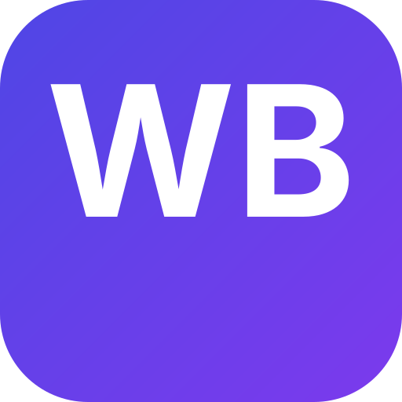

✓
任务与提醒
优先级分色、到期标签、专注视图。提醒在本地准时弹出，不依赖云端。

WorkBuddy工作台WorkBuddy 工作台把任务、日程、笔记、链接、人脉与本地项目， 收进一个本地优先的桌面应用。数据留在你自己的设备上， 登录即可在手机与电脑间无缝同步。
六个模块共享同一份本地数据，无需在十几个 App 之间来回切换。
优先级分色、到期标签、专注视图。提醒在本地准时弹出，不依赖云端。
月历与待办联动，今天要做什么一眼看清，重要的日子提前标亮。
登录即全量同步，SSE 实时推送 + 定时兜底，断网期间的改动重连后自动归位。
数据落在本机 userData，AES-256-GCM 加密。你的内容不上传、不绑架。
人脉与常用链接归拢到一处，随手记录、一键直达，告别收藏夹吃灰。
每个项目记录它在磁盘上的真实文件夹，点一下就在文件管理器里打开。
所有内容存在你自己的设备上，加密落盘。换电脑、卸软件，数据带得走。
面向端侧 AI / IoT 场景设计，资料与上下文留在本地，推理更可控。
登录即全量 + 实时，不用手动导出导入。多端永远是一份数据。
Windows 桌面版 + 移动端 PWA，添加到主屏幕就能用，不进应用商店也行。
原生 Electron 封装，本地运行后端与前端，体验最完整。
同一份可安装网页应用，手机浏览器打开后「添加到主屏幕」即可。
想了解同步协议、部署自己的后端，或参与项目？文档与源码都在仓库里。
回到顶部